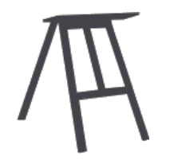
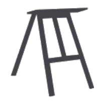

O conteúdo aparecerá em breve
Estamos produzindo os materiais deste eixo.
Um Caso de Arte é um projeto do ITS Rio que busca explorar a interseção entre cultura e direito com exemplos práticos e de forma acessível. Como um acervo de conteúdo com foco em Direito Autoral, queremos compartilhar os aspectos atualizados desse debate.
Conteúdo em ordem temática:
Estamos produzindo os materiais deste eixo.
